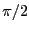

Next: Graphics operation word format Up: Implementation Details Previous: Number representation
Two function tables were pre-calculated. A sine and a cosine table, each with 512 evaluation points, were generated in C and ported over to 16-bit fixed point notations, and then actuated in M4K blocks. While a cosine table was explicitly not required, one was generated in order to fix a bug that presented itself when a sine table was used even though the argument was offset by  .